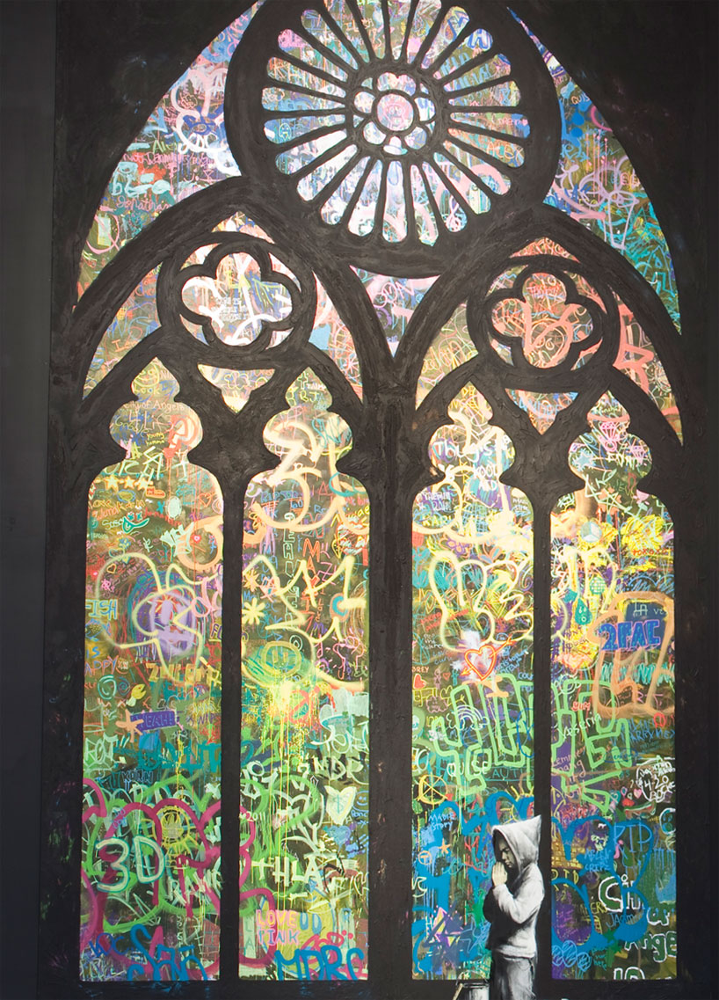

Credit
This painting was created for an art gallery in Los Angeles California, Banksy worked with public school students in order to create the painting. It shows an old stain glass window(painted) and the glass panes of the window are filled with graffiti and a yound boy in street clothes is seen kneeling and praying in front of it.
2011
Spray Paint
Los Angeles, USA